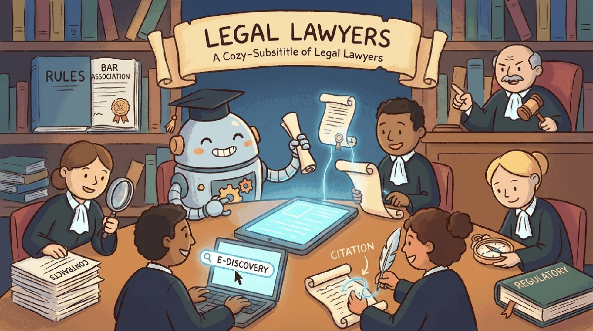

"Legal LLMs answer questions that lawyers wrote three thousand years ago."
Sage, Legally-Cautious AI Agent
Part XIV built product fundamentals. Part XIV applies them to industries. This chapter starts in legal: contract analysis, e-discovery, legal research, drafting assistance, and the unique evaluation and compliance challenges of an LLM whose answers may end up in court.
Legal is the industry with the most extreme combination of LLM upside and LLM risk. Upside: the work is fundamentally text-on-text reasoning, the documents are long, the volume is enormous, and the per-hour rates make even modest automation pay for itself in months. Risk: the failure mode is "the model invented a precedent and the attorney filed it", already a real headline in multiple jurisdictions, and the consequences are sanctions, malpractice claims, and bar discipline.
The canonical bar-discipline incident is Mata v. Avianca (S.D.N.Y., June 2023), where attorney Steven Schwartz filed a brief citing six precedents that ChatGPT had hallucinated and was sanctioned along with his co-counsel. The vendor landscape that consolidated in response is anchored by Harvey ($100M Series B, Dec 2024), Thomson Reuters' $650M acquisition of Casetext (Aug 2023), and Hebbia on the document-analysis side, plus the verified-RAG pattern (every cited authority resolves to a real document in a vetted corpus) that virtually every production legal-AI deployment now uses.
This chapter is the practitioner-targeted summary of what 2026 settled in legal LLM applications and where the field is still evolving. Section 67.1 walks through the five use-case categories that have stabilized. Section 67.2 catalogs the failure modes that produced a generation of sanctions orders. Section 67.3 covers the bar-association rules that now bind any production deployment. Section 67.4 walks through the verified-RAG architecture that has consolidated as the de-facto standard. Section 67.5 closes with the vendor landscape and the canonical readings.
Chapter Overview
Legal LLM deployment lives at the intersection of high-stakes accuracy, professional-conduct rules, and aggressive vendor marketing. This chapter walks the use cases that actually work in legal practice (contract review, e-discovery, citation, regulatory research, summarization), the failure modes specific to legal (hallucinated precedent, privilege leakage, jurisdictional bias, the Mata v. Avianca postmortem), the bar-association and regulatory rules (ABA Model Rules 1.1, 1.6, 5.3, the EU AI Act), the verified-RAG architecture that has consolidated as the de facto standard, and the vendor landscape plus canonical external sources.
Legal AI is the industry chapter with the highest cost of error and the clearest professional-conduct constraints. This chapter teaches what works, what fails, and what binds you.
- Map the legal use cases (contract review, e-discovery, citation, regulatory research) that actually ship.
- Diagnose hallucinated precedent, privilege leakage, and jurisdictional bias in a legal LLM pipeline.
- Apply ABA Model Rules 1.1, 1.6, 5.3 and the EU AI Act to a legal LLM deployment.
- Architect a verified-RAG legal stack that satisfies compliance and accuracy requirements.
- Evaluate the 2026 legal LLM vendor landscape against a target firm's needs.
Sections in This Chapter
Prerequisites
- RAG fundamentals from Chapter 32
- Structured extraction from Chapter 34
- Specialized evaluation from Chapter 43
- 67.1 Use Cases That Actually Work in Legal Practice Contract review, e-discovery, citation, regulatory research, and document summarization, with the vendor landscape and the human-in-the-loop patterns.
- 67.2 Failure Modes Specific to Legal Practice Hallucinated precedent, privilege leakage, jurisdictional bias, and the Mata v. Avianca postmortem.
- 67.3 Bar Association and Regulatory Rules ABA Model Rules 1.1, 1.6, 5.3, the EU AI Act, and the disclosure rules that govern LLM use in legal practice.
- 67.4 Verified-RAG Architecture for Legal The five-layer pattern that has consolidated as the de-facto standard for compliant legal LLM deployment.
- 67.5 Legal LLM Vendors and Further Reading The 2026 legal-LLM vendor landscape, cross-references to other chapters, and the canonical external sources.
You are asked to build an LLM-assisted contract-review tool for a mid-size law firm. The tool must summarize a contract, flag risky clauses, and propose redlines. Sketch the verification pipeline that prevents the tool from being used as legal advice. Specifically, identify (a) which LLM calls must be backed by retrieval, (b) which outputs need a citation to source text, (c) which decisions stay with a licensed attorney, and (d) how you would audit a year of usage to show regulators that the tool did not cross the unauthorized-practice-of-law line.
Answer Sketch
(a) Summarization and clause-risk flagging must be grounded in the contract text via RAG, with the retrieved passages logged alongside the output. (b) Every flagged clause and redline suggestion must cite the specific paragraph or section it refers to. (c) The decision to accept any redline, to advise the client, and to file the document remains with a licensed attorney; the LLM only proposes. (d) The audit log retains the input contract hash, retrieved passages, LLM output, attorney decision, and timestamps for at least the jurisdiction's malpractice-statute window (typically 6 to 10 years). The 72.4 evaluation section's clause-coverage and faithfulness metrics anchor the audit.
What Comes Next
Legal sets the verification-heavy pattern that the rest of Part XI builds on. Chapter 68 turns to finance, where the failure-mode catalog is different (numerical hallucination, fair-lending exposure, market-manipulation adjacency) but the architectural response (tiered LLM trust, grounded retrieval, audit logs) follows the same shape.